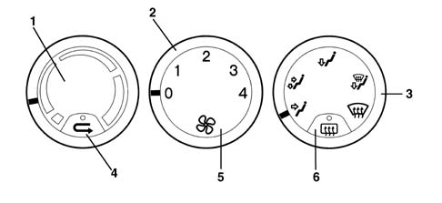
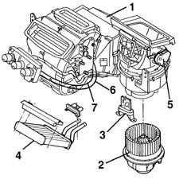

Introduction - HEATER
- Path
- Descriptions > 50 AUXILIARY UNITS > 5020 HEATER > Introduction - HEATER
- Kind
- system description
- Applies to
- all engines; all production periods
- Interactive page
- https://sloeber94.github.io/elrnDB-a156/en/#/3239222
Applies to: all engines; all production periods
GLOSSARY
LEDs
The LED code (Light Emitting Diode) is used for particular diodes capable of emitting light at a certain wavelength when a low voltage electric current passes through.
Recirculation
This function of the ventilation system makes it possible to recirculate the same air in the passenger compartment, preventing the intake of outside air. It is a very useful function because it makes it possible to exclude the entry into the passenger compartment of undesirable outside air (fumes, polluted air when driving in traffic, etc.).
Heat exchanger
This device has been designed (with a relatively low volume compared with heat exchange surfaces) to allow the flow of heat from a fluid at a higher temperature to another fluid at ambient temperature.
The heater system is enclosed in an integrated conveyer/distributor unit that encapsulates all components.
This unit is housed below the centre of the facia. The controls are located on the central console.
COMPONENTS
Heater controls
-

1, air temperature adjustment knob 2, air ventilation selection knob 3, flow distribution selection knob 4, recirculation function activation key 5, heated rear window activation key
The left-hand knob is used to adjust the temperature of air taken into the passenger compartment:
- right-hand sector (red): warmer air
- left-hand sector ( blue): cooler air
The central knob adjusts air temperature to four flow settings (1, 2, 3 and 4).
In position "0" the fan is switched off, but air enters through the "dynamic" effect, i.e. as a result of the movement of the vehicle.
The right-hand knob selects air distribution to the passenger compartment. Different distribution patterns are available. Clockwise positions are as follows:
- flow to front outlets only,
- flow to front and lower outlets,
- flow to lower outlets only,
- flow to lower outlets and windscreen,
- flow to windscreen only;
The key in the lower part of the left-hand knob activates the air recirculation function; the led comes on when the key is pressed (*). If the key is not pressed, a dynamic air flow created by the car's motion flows in from outside
The key in the lower part of the right-hand knob activates the heated rear window; press the key to turn on the led (*) (for more information see DESCRIPTION AND OPERATION: Integrated Service Control Unit - 5505A.
Duct/distributor unit
The electric fan directs the flow of outside air (A) towards the interior of the vehicle.
If, on the other hand, the recirculation function is activated, the special flap directs the flow of air from the inside of the pasenger compartment (B).
The flow of air then partly or totally strikes the heater radiator, depending on the position of the mixing flap.
Lastly, the air is sent to the various vents depending on the position of the upper, centre and lower distribution flaps.
The outside/recirculation air flap is operated by an electric motor, whilst the other flaps (mixing and distribution) are operated mechanically through bowden cables.

1, Duct/distributor assembly 2, Fan motor 3, Speed variator (resistor) 4, Heater radiator 5, Recirculation flap actuator 6, Distribution control 7, Mixer control
The electric fan which sends the outside or recirculation air towards the duct/distributor receives a 12 V supply and is operated at different speeds by a nearby resistance.
A resistive governor drives the fan at different speeds.
The device alters the voltage signal that controls the fan by turning on one or more resistances:
- First speed, resistances R1, R2 and R3 activated
- Second speed, resistances R2 and R3 activated.
- Third speed, resistance R3 activated.
- Fourth speed, no resistance activated.
The radiator is a heat exchanger connected to the engine cooling circuit by means of a pipe which takes hot water from the engine to heat the air which is sent to the passenger compartment.
The rotation of the outside air inlet flap is controlled by means of the recirculation actuator. This operates the flap in two extreme positions - "dynamic air" and "recirculation" without any intermediate positions.
A motor controls the rotary movement of a drive pin which acts directly on the flap.